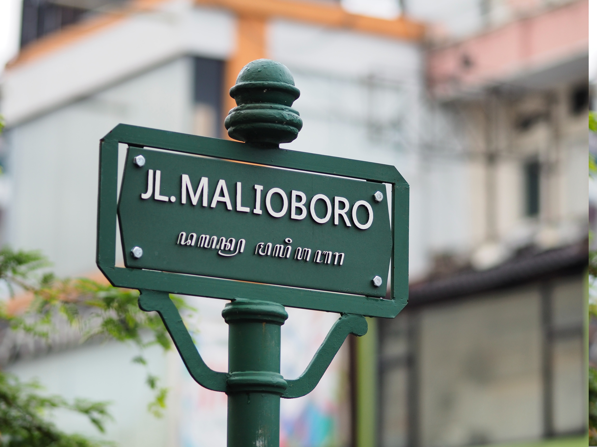

TENTANG
Kota Yogyakarta atau dikenal oleh masyarakat setempat dengan nama Kota Jogja atau Kota Yogya adalah ibu kota dan pusat pemerintahan Daerah Istimewa Yogyakarta, Indonesia. Yogyakarta adalah kota besar yang mempertahankan konsep tradisional dan budaya jawa. Kota Yogyakarta juga pernah menjadi ibu kota RI pada tahun 1946.
Jogja juga terkenal akan keberagaman tempat wisata nya. Banyak sekali tempat wisata di kota Jogja.
Diantaranya adalah Candi Borobudur, Candi Prambanan, Dan Malioboro.